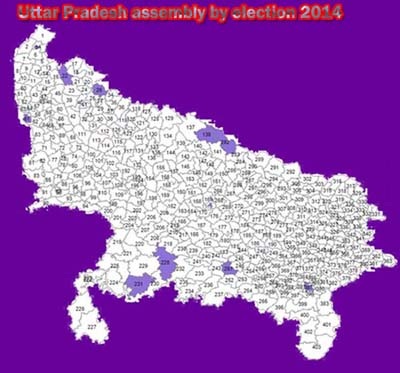

uttar pradesh assembly by elections 2014 results
uttar pradesh assembly by elections 2014 results live website list
uttar pradesh assembly by election Results update Will be available at the following mirror websites sites after 8:00 AM on 16th September, 2014 Mirror websites: http://eciresults.nic.in & http://eciresults.ap.nic.in
shaharanpur nagar uttar pradesh assembly by elections 2014
bijnor uttar pradesh assembly by elections 2014
thakurdwara uttar pradesh assembly by elections 2014
noida uttar pradesh assembly by elections 2014
nighasan uttar pradesh assembly by elections 2014
lucknow east uttar pradesh assembly by elections 2014
hamirpur uttar pradesh assembly by elections 2014
charkhari uttar pradesh assembly by elections 2014
sirathu uttar pradesh assembly by elections 2014
balha uttar pradesh assembly by elections 2014
rohaniya uttar pradesh assembly by elections 2014
Wednesday (20.08.2014) the Chief Electoral Officer, uttar pradesh annonced uttar pradesh assembly by elections 2014 in three Legislative Assembly constituencies in uttar pradesh - shaharanpur,bijnor,thakurdwara,noida,nighasan,lucknow east, hamirpur,charkhari,sirathu,balha and rohaniya. shaharanpur,bijnor,thakurdwara,noida,nighasan,lucknow east, hamirpur,charkhari,sirathu,balha and rohaniya Assembly seats became vacant in uttar pradesh after sitting MLAs Shri Hemendra Pal Singh (BJP) , Shri Akshaywar Lal Gaur (BJP),Shri Rajpal Chauhan(BJP),Smt. Vimla Batham(BJP),Shri Ramkumar Verma(BJP),Shri Gopal Tandon(BJP),Smt. Geeta Singh(BJP),Shri Santosh Patel(BJP) and Anupriya Patel (AD) were elected to the 16th Lok Sabha in the assembly elections 2014.

uttar pradesh assembly by elections 2014 dates
uttar pradesh assembly by elections 2014 poll date:- 13.09.2014 Saturday and result date 16.09.2014 Tuesday, for more details of uttar pradesh assembly by elections 2014 dates click here
uttar pradesh assembly by elections 2014 survey
uttar pradesh assembly by elections 2014 predictions
uttar pradesh assembly by elections 2014 opinion poll
uttar pradesh assembly by elections 2014 exit polls
uttar pradesh assembly by elections 2014 con i candidates list
uttar pradesh assembly by elections 2014 latest survey
uttar pradesh assembly by elections 2014 bjp candidates list
uttar pradesh assembly by elections 2014 aap candidates list
uttar pradesh assembly by elections 2014 bsp candidates list
uttar pradesh assembly by elections 2014 latest news